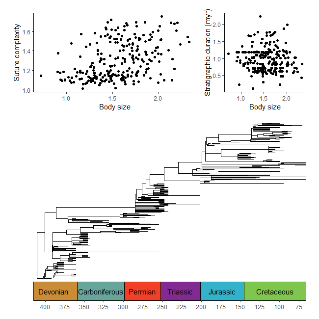
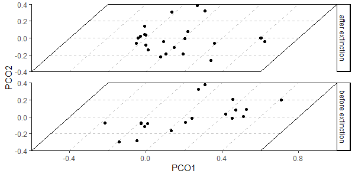

Overview
deeptime extends the functionality of other plotting packages like ggplot2 and lattice to help facilitate the plotting of data over long time intervals, including, but not limited to, geological, evolutionary, and ecological data. The primary goal of deeptime is to enable users to add highly customizable timescales to their visualizations. Other functions are also included to assist with other areas of deep time visualization.
Installation
# get the stable version from CRAN
install.packages("deeptime")
# or get the development version from github
# install.packages("devtools")
devtools::install_github("willgearty/deeptime")Usage
Add timescales to plots
The main function of deeptime is coord_geo(), which functions just like coord_trans() from ggplot2. You can use this function to add highly customizable timescales to a wide variety of ggplots.
library(divDyn)
data(corals)
# this is not a proper diversity curve but it gets the point across
coral_div <- corals %>% filter(stage != "") %>%
group_by(stage) %>%
summarise(n = n()) %>%
mutate(stage_age = (stages$max_age[match(stage, stages$name)] +
stages$min_age[match(stage, stages$name)])/2)
ggplot(coral_div) +
geom_line(aes(x = stage_age, y = n)) +
scale_x_reverse("Age (Ma)") +
ylab("Coral Genera") +
coord_geo(xlim = c(250, 0), ylim = c(0, 1700)) +
theme_classic()
Combine plots with timescales and plots without timescales
library(paleotree)
data(RaiaCopesRule)
p1 <- ggplot(ammoniteTraitsRaia) +
geom_point(aes(x = Log_D, y = FD)) +
labs(x = "Body size", y = "Suture complexity") +
theme_classic()
p2 <- ggplot(ammoniteTraitsRaia) +
geom_point(aes(x = Log_D, y = log_dur)) +
labs(x = "Body size", y = "Stratigraphic duration (myr)") +
theme_classic()
p3 <- ggtree(ammoniteTreeRaia, position = position_nudge(x = -ammoniteTreeRaia$root.time)) +
coord_geo(xlim = c(-415,-66), ylim = c(-2,Ntip(ammoniteTreeRaia)), pos = "bottom",
size = 4, abbrv = FALSE, neg = TRUE) +
scale_x_continuous(breaks = seq(-425, -50, 25), labels = -seq(-425, -50, 25)) +
theme_tree2() +
theme(plot.margin = margin(7,11,7,11))
ggarrange2(
ggarrange2(p1, p2, widths = c(2,1), draw = FALSE),
p3, nrow = 2, heights = c(1,2)
)
Plot disparity through time
#make transformer
library(ggforce)
trans <- linear_trans(shear(.5, 0))
library(dispRity)
data(demo_data)
# prepare data to be plotted
crinoids <- as.data.frame(demo_data$wright$matrix[[1]][, 1:2])
crinoids$time <- "before extinction"
crinoids$time[demo_data$wright$subsets$after$elements] <- "after extinction"
square <- data.frame(V1 = c(-.6, -.6, .6, .6), V2 = c(-.4, .4, .4, -.4))
# plot data normally
ggplot() +
geom_segment(data = data.frame(x = -.6, y = seq(-.4, .4,.2),
xend = .6, yend = seq(-0.4, .4, .2)),
aes(x = x, y = y, xend = xend, yend=yend),
linetype = "dashed", color = "grey") +
geom_segment(data = data.frame(x = seq(-.6, .6, .2), y = -.4,
xend = seq(-.6, .6, .2), yend = .4),
aes(x = x, y = y, xend = xend, yend=yend),
linetype = "dashed", color = "grey") +
geom_polygon(data = square, aes(x = V1, y = V2), fill = NA, color = "black") +
geom_point(data = crinoids, aes(x = V1, y = V2), color = 'black') +
coord_cartesian(expand = FALSE) +
labs(x = "PCO1", y = "PCO2") +
theme_classic() +
facet_wrap(~time, ncol = 1, strip.position = "right") +
theme(panel.spacing = unit(1, "lines"), panel.background = element_blank())
# plot data with transformation
ggplot() +
geom_segment(data = data.frame(x = -.6, y = seq(-.4, .4,.2),
xend = .6, yend = seq(-0.4, .4, .2)),
aes(x = x, y = y, xend = xend, yend=yend),
linetype = "dashed", color = "grey") +
geom_segment(data = data.frame(x = seq(-.6, .6, .2), y = -.4,
xend = seq(-.6, .6, .2), yend = .4),
aes(x = x, y = y, xend = xend, yend=yend),
linetype = "dashed", color = "grey") +
geom_polygon(data = square, aes(x = V1, y = V2), fill = NA, color = "black") +
geom_point(data = crinoids, aes(x = V1, y = V2), color = 'black') +
coord_trans_xy(trans = trans, expand = FALSE) +
labs(x = "PCO1", y = "PCO2") +
theme_classic() +
facet_wrap(~time, ncol = 1, strip.position = "right") +
theme(panel.spacing = unit(1, "lines"), panel.background = element_blank())